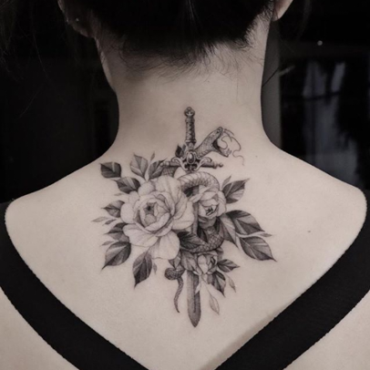
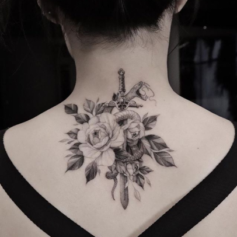

.png)

Artist: @kozo_tattoo
Studio: @bangbangnyc
Eden Kozo is a tattoo artist
based in Qiryat Ono, Israel.
Eden Kozo making mini-colored tattoos.
Specializes in micro style and single needle.
Originally from Seoul, Korea K began his art career as a graphic designer. "Growing up I was always looking for the finest pen I could use for my art projects. When I began my career in the tattoo industry, naturally I was drawn to the intricate details of the micro style."

In this article we take a look at the
many ways you can create temporary
tattoos at home.
BY JUSTINE MORROW— >30 DAYS AGO
The first step in every tattoo adventure will be figuring out what tattoo you want and what tattoo artists you’d like to do it. Whether you’re going on vacation and want a forever something to remember your time, or you just want to pick up a piece at your local studio..doesn’t really matter. But planning ahead can be fun and make getting those bigger tattoos a bit easier.
Once you know what tattoo you want, the next step is to figure out when you’d like it done. Sometimes it’s better to have a concrete goal to work towards, so you can go ahead and actually book your next tattoo if you know you’ll be able to save up for it by then. If not, you can always save first and book later! Many tattoo artists who are in demand and have their calendars open, only book up to three months in advance, so keep that in mind as well.
Sometimes budgeting for a new tattoo may mean just waiting until your tax refund comes in the mail but, more often, it means going without other special treats for a small amount of time. Look at it this way: let’s say you go out to the bars or to eat at restaurants on Friday and Saturday. If you’re trying to save for a new tattoo, perhaps you start only going out on Friday and putting the cash you would’ve spent on Saturday aside! Try not to think of it as something “restricting” though...getting a little creative with your money in order to save for a tattoo should be fun.
Want to save for a new tattoo? There’s an app for that. Well, not exactly. But sort of. Some of the best budgeting apps out there are actually free! Check out Mint, Wally, Acorns, Trim, Clarity Money...there are so many different ones out there that you just kind of need to play around with them until you find one that works for you. Most of these, however, have the ability to set goals such as “New Tattoo Fund” so that you can actually schedule putting money aside with ease.
It’s not just the tattoo industry that is suffering right now. Many people around the globe are struggling with layoffs, business closures, and past due bills. That’s why this is the perfect option for people who just can’t stretch their buck enough to purchase prints: it’s free. Sharing your favorite artists' work on your social media, showing it to your friends, family or co-workers...that’s all bringing free promotion for an artist who may really need it right now. Make sure to tag them if you repost one of their images: that’s a truly important way people can find their new favorite tattoo artist. After all, this industry was built on word of mouth!
This is also a super easy, fun, filler filler filler filler filler filler filler filler and free way you can support tattoo artists during coronavirus closures. Believe it or not, many people like to see tattoo artists pieces healed and out in the wild, including the tattooists themselves! And for whatever reason, collectors and clients rarely send them over. But it’s a great way to show that not only are you super proud of the tattoos that you’ve collected from them, but it also can help show that your artist knows what they’re doing. Healed tattoos often spotlight a tattooists talent, especially if you’ve had your piece for 5 years and it still looks hella fresh! This is just a filler to get a better aligment! I still have to write a bit more yet it appearantly is still not enough
Although travel may be restricted right now, and tattoo shops are mostly closed, that doesn’t mean you can’t look forward to the future. As soon as the world heals and things are back on track, the tattooists you admire will be back in business with open books waiting and willing for whatever custom or flash piece you could ever desire. Grab a spot now, and you’ll be glad you did.
Perhaps the most straight-forward and price affordable option for most people out there is buying merchandise from tattoo artists you follow and admire. There are so many options and price points; some tattooists have t-shirts, mugs, bar towels, prints, skateboards...you name it. A tattoo artist somewhere out there has probably created it.
For this you can use either liquid eyeliner or an eyeliner pencil. Liquid eyeliner will give you a bit more control and a “Fineline” look, but a sharpened eyeliner pencil might be easier for those of you who aren’t totally versed in high quality drawing skills! But the whole point is to have fun! So go for it. If you mess up, keep some make-up remover wipes handy and quickly rub away mistakes before setting.
This way of doing a homemade tattoo is very similar to the eyeliner technique above, but uses sports pens. Sports markers are usually used to mark competitors in races, celebrate team events, and similar. Some of them have a point, some are a bit more blunt, and they come in both “pen” form as well as body paint form. The most important thing to remember is that, like eyeliner, they don’t have any toxic ingredients and are made to be skin safe!
Bic came out with “BodyMark” pens which are non-toxic cosmetic-grade markers that make doodling on your skin super safe. There are also temporary tattoo kits that come with little bottles of ink fitted with tiny metal tubes that make application very easy and they actually last for around 2 weeks! The kits from EasyInk are 100% fruit-based, so no need to worry about any weird chemicals staining your skin.
DIY temporary tattoos are super easy if you have access to an inkjet or laser printer. Just make sure to buy the temporary tattoo printer paper that matches whatever printer you may have at home!! Inkjet tattoo printer paper comes out super bright and clear, while laser printer tattoo paper will be much more realistic because of the finished matte look.
 
